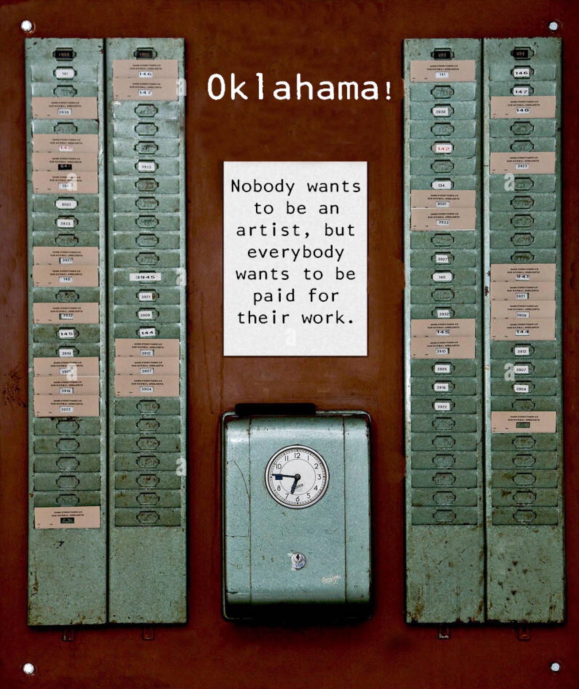
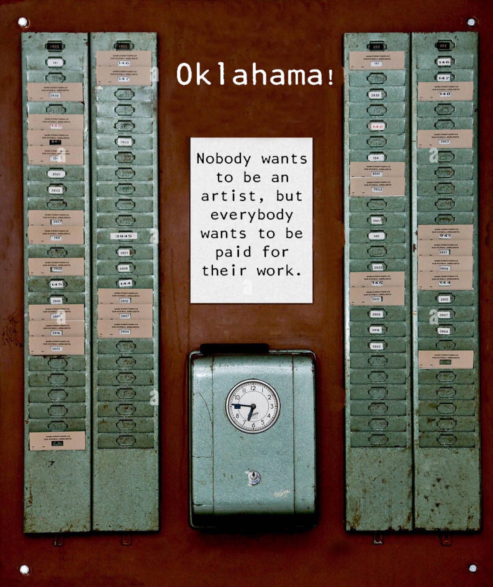

Oklahama!
Oklahama! is a 3 act live theater performance springing from an idea in Franz Kafka’s abandoned novel The Missing Person (Amerika). The book narrates the wanderings of an immigrant named Karl, who, in the final pages, sees a poster for The Nature Theater of Oklahama that promises to hire anyone who applies. He joins and then the novel breaks off. We’ll enact Kafka’s allegory by casting only among new immigrants to the U.S. We’ll pay all people involved in the production the same hourly wage and stage a reverie of what a Nature Theater of Oklahama might perform.
Oklahama! offers an inversion of theatrical norms. The object of the work is not the public but the cast, whose employment increases their chances of not becoming 'missing persons' in their adopted country. By directly impacting our player’s lives, every cent invested in the show is an investment in their future, and therefore in ours. From that perspective, Oklahama! is a hit before anyone sees it.
Cast size is determined by funding, but the number must be square-able (see Act 2). We can therefore hire 25, 36, 49, 64, 81 or 100 performers.
 

Act 1 (sound) 32 mins
Our cast is arrayed in a square on a steep bleacher. The public mills about below. This ‘prose choir’ launches into a meticulously rehearsed rendition of one page of Gertrude Stein’s The Making of Americans, alternating between English and Spanish translation. Using solos, groups and the cast as one, the chorus declaim the text, modulating emphasis, velocity and tone. By the end of Act I, the hall is flood-lit, the brightness broken only by large cones of shadow which force the standing public to the walls.


Act 2 (sight) 30 mins
The cast descends and enters the shadows. They perform a suite of silent tableaux following pictorial scripts composed of photos and film stills. These ‘scenes’ are seen in flashes as photos are taken in the darkness. These new pictures flow into a ‘silent movie’ (with inter-titles), projected onto a screen that descends before the bleachers, and accompanied by a live musician. The public can peer into the shadows or watch the film, and this draws them up to the chorus’ seats, inverting the opening set up. In September 2024, we produced a live streamed iteration of Act 2 called Cuarto Oscuro.

Act 3 (body) 12 mins
Throughout Act 2 we hear loud noises as performers defect from the shadows to the walls. A raucous procession is gearing up. As the public’s attention is drawn to the hubbub, the 'movie' shudders to an end. A cacophonous parade begins. It makes two shambolic circuits of the room and exits the hall as the lights die out. The public is left in the dark.